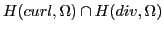

Least-squares finite element methods are an attractive class of methods for the numerical solution of certain partial differential equations, specifically div-curl systems. They are motivated by the desire to recover, in more general settings, the advantageous features of Rayleigh-Ritz methods such as the avoidance of discrete compatibility conditions and the production of symmetric and positive definite discrete systems. The methods are based on the minimization of convex functionals that are constructed from equation residuals.
This work deals with formulation of a class of compatible least-squares principles for a model div-curl equation and the efficient multigrid solution of the resulting algebraic systems. Specifically, we consider a discrete least-squares principle
The use of discrete divergence in this formulation is compelled by the well-known problems in the finite element approximation of the Hilbert space . In particular, in (1) we approximate that space conformally with respect to the curl operator. This yields a linear system in the form of a Hodge Laplacian discretized using edge (curl-conforming) elements. We demonstrate that this system can be solved using a multigrid method derived from the previous work of Bochev, Hu, Siefert and Tuminaro [1]. A complementary least-squares formulation wherein is approximated by div-conforming elements yields a linear system corresponding to a Hodge Laplacian discretized by face (div-conforming) elements. To solve this system we use an alternative formulation of the multigrid method derived in [2].